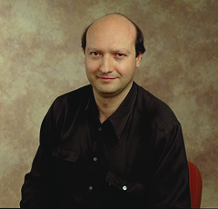

Speakers
We are excited to announce the following speakers:
Anders Møller Aarhus University
Anders works on static and dynamic program analysis, mostly for JavaScript and Java.
Fun fact: Anders did not participate in the 2007 World Championships in Atletics.
Ben L. Titzer Google
Ben L. Titzer leads Google's WebAssembly team in Munich. Before starting the WebAssembly project with Luke Wagner from Mozilla, he led the team that built the TurboFan optimizing compiler which now powers JavaScript and WebAssembly in V8. He graduated with a BS from Purdue University in 2002 and MS and PhD from UCLA in 2004 and 2007. His interests include safe programming languages for systems programming, compilers, virtual machines, nature and playing guitar.

Mario Wolczko Oracle Labs
Mario Wolczko is an Architect in Oracle Labs. His research interests include language implementation with an emphasis on virtual machines, computer architecture and memory systems design, garbage collection, object oriented programming languages and performance instrumentation.
Fun fact: My uncommon, hard-to-spell surname is the result of a bureaucratic transcription error.
Cristina Cifuentes Oracle Labs, Australia
Cristina is the Director of Oracle Labs Australia and an Architect at Oracle. Headquartered in Brisbane, the Lab focuses on Program Analysis as it applies to finding vulnerabilities in software and enhancing the productivity of developers worldwide.
Fun fact: Cristina’s PhD work led to dcc, a decompiler for 8086 .exe binaries.